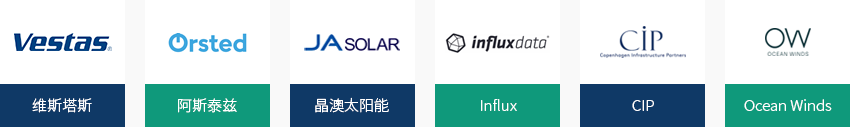
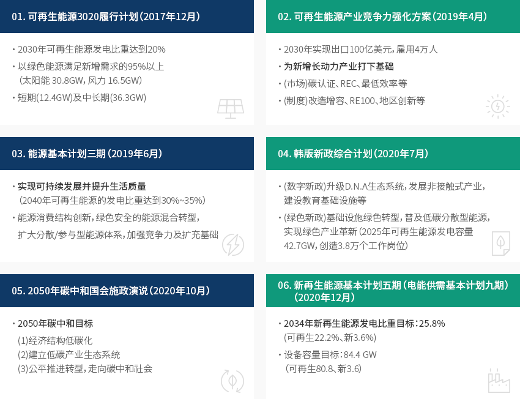
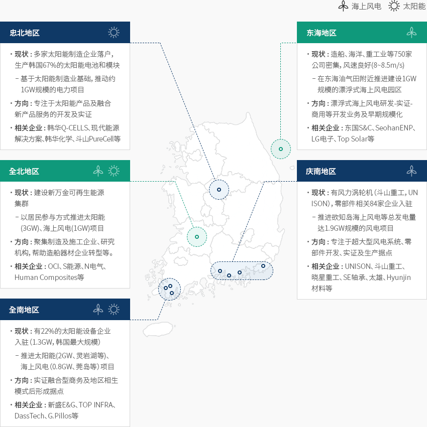

新再生能源
- Home
- Why KOREA
- 产业
- 新能源及可再生能源
-
以优秀的技术水平为基础 致力于确保全球竞争力 关闭内容以优秀的技术水平为基础 致力于确保全球竞争力据韩国科学技术企划评价院（KISTEP，2018）调查结果，韩国新再生能源领域的技术水平为86%(以100%为基准)，
与发达国家（欧洲、美国、日本）存在10%左右的技术差距。太阳能产业发展以太阳能电池、模块制造企业（韩华解决方案、新盛E&G、现代能源解决方案、OCI等）为主，
在拓展内需市场的同时，不断扩大出口和建立海外工厂，提升全球供应比重。风能产业拥有增长潜力高的主要零部件（叶片、电力转换设备等）生产基础设施，
计划通过建设大规模风能园区等途径扩大内需市场及投资规模，进而确保全球竞争力。韩国已拥有氢能汽车、燃料电池等氢能领域的制造企业及相关技术能力，正在推动全球合作项目，
以扩大绿色氢气生产制造及相关基础设施（运输、储藏、充电及销售）。"신재생에各类新再生能源的韩国技术竞争力水平"各类新再生能源的韩国技术竞争力水平 能源, 全年政府投资金额(百万美元)1), 确保技术竞争力(与领先国家的技术差距, 与领先国家技术差距增减, 相较于先导国家的技术水平) 能源 全年政府投资金额(百万美元)1)1) 确保技术竞争力 与领先国家的技术差距2) 与领先国家技术差距增减 2) 相较于先导国家的技术水平 3) 光电 52.4 3年以下 较2014年缩小幅度未满1年 80% 以上 风力 35.9 5年以上 ‘14年差距拉大 60% 以上 氢能 6.1 3~5年 较2014年缩小幅度超过1年 70% 以上 燃料电池 25.9 3年以下 较2014年缩小幅度未满1年 80% 以上 光热 4.2 3年以下 较2014年缩小幅度未满1年 80% 以上 地热 5.7 5年以上 较2014年缩小幅度超过1年 70% 以上 海洋 6.8 3~5年 较2014年缩小幅度超过1年 60% 以上 ※ 资料来源：《新再生能源核心技术开发项目特定评估报告》（KISTEP，2018.7）- 2013~2017年，年均政府投资金额，《项目预算要求书》（2014~2018），适用2018年平均汇率进行韩元-美元换算
- 《2016年技术水平评估》（KISTEP，2017）
- 《新再生能源技术水平及国外技术引进情况调查》（KISTEP）
-
新再生能源的 装备容量和发电比重持续增加 打开内容新再生能源的 装备容量和发电比重持续增加自《新再生能源开发、使用及普及促进法》修订实施（2019年10月）后，统计数据不含非再生废弃物。
据韩国能源公团介绍，2020年韩国新再生能源发电比重为7.43%。 得益于太阳能、
风力等再生能源发电量增加，同比增长幅度达到25.9%（2019年34,196GWh → 2020年 43,062GWh）。
不仅如此，2020年韩国新再生能源累计装备容量为25.9GW，同比增长3.2个百分点。
其中，太阳能和风力的发电比重分别为66.8%和6.3%。（KEA，2020）(吨标 : 准油)新再生能源产量情况 分类, 年 ※ 资料来源：韩国能源公团新再生能源中心《新再生能源普及统计》
※ 统计公布时间：调查基准年度第二年11月（确定公布）
※ 注 : 小数点后取2位（四舍五入）的数据，有可能与KOSIS等的资料存在差距。
※ 注 : 详细内容请参考《2018年新再生能源普及统计》(2019年发行)资料" 最近五年新再生能源发电量及发电比重 "最近五年新再生能源发电量及发电比重 分类, 年度 分类 '16 '17 '18 '19 '20 年度(MWh) 562,219,124 78,012,662 594,585,781 589,148,478 579,936,931 发电比重(%) 3.32 4.11 4.99 5.80 7.43 年度(MWh) 18,664,233 23,767,948 29,656,919 34,195,813 43,061,511 可再生能源发电量 17,160,150 21,012,926 26,189,965 30,879,376 37,161,788 新能源发电量 1,504,083 2,755,022 3,466,954 3,316,436 5,899,723 可再生能源 光电 5,515,817 7,737,852 10,154,964 14,163,040 19,297,854 风力 1,683,142 2,169,014 2,464,879 2,679,158 3,149,798 水力 2,858,714 2,819,882 3,374,375 2,791,076 3,879,383 海洋 495,556 489,466 485,353 474,321 457,263 生物 6,237,564 7,466,664 9,363,229 10,415,632 9,938,354 废弃物 369,357 330,048 347,166 356,149 439,137 新能源 燃料电池 1,143,402 1,469,289 1,764,948 2,285,164 3,522,350 IGCC 360,681 1,285,733 1,702,006 1,031,272 2,377,374 -
新再生能源 产业概况 打开内容新再生能源 产业概况本届政府的能源转型政策主要围绕环保能源产业展开。2020年产业统计中新设“新再生能源产业特殊分类”
（2021年6月），并以国家统计方式调查公布了涵盖制造业、建筑、供应及服务业的产业概况。
2020年，韩国新再生能源产业总销售额约为25.5万亿韩元，从业人员为11万9千名，投资规模达到7.7万亿韩元。新再生能源相关建筑业中，太阳能建设因进一步推广普及太阳能而占据较大比重，其次为燃料电池、风力建筑业。
由于小型太阳能发电企业增加，发电与供热业的企业数量和从业人数分别占总体的96%和70%。调查结果显示，随着新再生能源推广普及，工程和维护服务呈现增长态势，制造业、建筑业、供应业、
服务业的销售额达到1.3万亿韩元，从业人数也达到5,000人。可再生能源产量现状 分类, 企业数, 종사자, 销售额, 投资 分类 企业数 종사자 销售额 投资 家 比重(%) 人 比重(%) 亿韩元 比重(%) 亿韩元 比重(%) 制造业 499 0.6 12,759 10.8 107,369 42.2 3,180 3.9 建筑业 2,169 2.6 17,617 14.9 71,886 28.2 995 1.2 发电及供热业 78,276 95.6 82,810 69.9 62,696 24.6 72,460 94.6 服务业 963 1.2 5,322 4.5 12,779 5.0 210 0.3 黄金产业 81,907 100.0 118,508 100.0 254,730 100.0 76,845 100.0 ※ 资料来源：2020年新再生能源产业统计调查结果（韩国能源公团，2021年12月） -
太阳能、风力发电相关的 跨国企业持续进驻韩国 打开内容太阳能、风力发电相关的 跨国企业持续进驻韩国最近，来自日本、德国、西班牙、中国等地的企业为进军韩国太阳能、风力发电领域，而陆续在韩设立法人，
欧洲及北美主要企业也准备与韩国发电子公司、地方自治团体及韩国企业合作设立法人，以入驻海上风力规划园区。据产业通商资源部（2021年）统计，韩国的外商直接投资（Foreign Direct Investment）自2013年以来一直保持增长态势。
据分析，这归功于对生产零部件的机器和半导体等中间零部件制造业的投资比重较高，
且通过增加投资参与关于第四次工业革命的全球价值链也是原因之一。最近，丹麦风力涡轮机制造商维斯塔斯（Vestas）与，蔚山签署了漂浮式海上风电园区建设项目共赢合作协议。
海外民间投资企业日益增多，如与SK E&S合作的丹麦投资运营公司CIP，此外还有、英国和法国的GIG-Total、
荷兰与瑞典的Shell-Coens Hexicon、西班牙的Ocean Winds、挪威的Equinor等。日本Influx、中国晶澳太阳能（JA Solar）也决定在新万金再生能源集群出资建设工厂。
另外，丹麦国营能源企业阿斯泰兹（Orsted）为参加韩国风力项目，在韩设立了亚太地区第二家法人。"进驻韩国新再生能源领域的跨国企业"
-
新再生能源的 发展方案 打开内容新再生能源的 发展方案韩国政府公布《2050年碳中和宣言》后，制定了经济结构低碳化，建立低碳产业生态系统、公平实现碳中和社会转型等目标，计划修订具体路线图及实施计划。最近，2050碳中和委员会(2021年10月)表决通过国家温室气体减排目标（NDC，Nationally Determined Contribution）
上调方案（到2030年减排2018年温室气体排放量的40%）和2050碳中和方案（中断煤炭发电，以实现电热生产所需碳排放最小化），并将其提交至政府。当前已出台的新再生能源发展方案相关政策包括▲可再生能源3020实施计划（2017年12月）、
▲可再生能源产业竞争力强化方案（2019年4月）、▲能源基本计划三期（2019年6月）、▲韩版新政综合计划（2020年7月）、
▲2050年碳中和国会施政演说（2020年10月）、▲新再生能源基本计划五期（电能供需基本计划九期）（2020年12月）、
▲2050碳中和委员会上调国家温室气体减排目标（NDC）并提出2050方案（2021年10月）等。01. 可再生能源3020履行计划（2017年12月）
- 2030年可再生能源发电比重达到20%
- 以绿色能源满足新增需求的95%以上（太阳能 30.8GW，风力 16.5GW）
- 短期(12.4GW)及中长期(36.3GW)
02. 可再生能源产业竞争力强化方案（2019年4月）
- 2030年实现出口100亿美元，雇用4万人
- 为新增长动力产业打下基础
- (市场)碳认证、REC、最低效率等
- (制度)改造增容、RE100、地区创新等
03. 能源基本计划三期（2019年6月）
- 实现可持续发展并提升生活质量（2040年可再生能源的发电比重达到30%~35%）
- 能源消费结构创新，绿色安全的能源混合转型，扩大分散/参与型能源体系，加强竞争力及扩充基础
04. 韩版新政综合计划（2020年7月）
- (数字新政)升级D.N.A生态系统，发展非接触式产业，建设教育基础设施等
- (绿色新政)基础设施绿色转型，普及低碳分散型能源，实现绿色产业革新（2025年可再生能源发电容量42.7GW，创造3.8万个工作岗位）
05. 2050年碳中和国会施政演说（2020年10月）
- 2050年碳中和目标
- (1) 经济结构低碳化
- (2) 建立低碳产业生态系统
- (3) 公平推进转型，走向碳中和社会
06. 新再生能源基本计划五期（电能供需基本计划九期）（2020年12月）
- 2034年新再生能源发电比重目标：25.8%(可再生22.2%、新3.6%)
- 设备容量目标：84.4 GW（可再生80.8、新3.6）
新再生能源产业扶持制度
为扶持扩大新再生能源投资，现已调整REC（Renewable Energy Certificate，可再生能源供应证书）的加权值，加强对太阳能、风力、氢燃料电池等的扶持。最近，还将到2026年的可再生能源义务供应比例提高到25%，以便增加可再生能源需求，并针对能源节约设施（含再生能源）的投资实行税额抵扣制度（税额抵扣率：中小企业为7%、中坚企业为3%、其他企业为1%）。此外，产业通商资源部还建立了各种制度（500亿韩元促进基金及面向希望投资海外的韩国企业和外国企业的对接平台），如新产业外国人投资促进基金、线上投资对接系统等。
-
分地区构建 个性化产业生态系统 打开内容分地区构建 个性化产业生态系统针对拥有再生能源产业基础或大规模项目规划的地区，加强创新基础设施，分地区构建个性化区的产业生态系统。
地方政府主导开发和推动地区定制型大规模项目等，而中央政府则提供相关支持服务，如建设研究及基础设施、
支持研发和实证、培养人才等。-
忠北地区
- 现状： 多家太阳能制造企业落户，生产韩国67%的太阳能电池和模块
- 基于太阳能制造业基础，推动约1GW规模的电力项目
- 方向： 专注于太阳能产品及融合新产品服务的开发及实证
- 相关企业： 韩华Q-CELLS、现代能源解决方案、韩华化学、斗山PureCell等
- 现状： 多家太阳能制造企业落户，生产韩国67%的太阳能电池和模块
-
韩华Q-CELLS、现代能源解决方案、韩华化学、斗山PureCell等
- 现状： 造船、海洋、重工业等750家公司密集，风速良好(8~8.5m/s)
- 在东海油气田附近推进建设1GW规模的漂浮式海上风电园区
- 方向： 漂浮式海上风电研发-实证-商用等开发业务及早期规模化
- 相关企业： 东国S&C、SeohanENP、LG电子、Top Solar等
- 现状： 造船、海洋、重工业等750家公司密集，风速良好(8~8.5m/s)
-
全北地区
- 现状： 建设新万金可再生能源集群
- 以居民参与方式推进太阳能(3GW)、海上风电(1GW)项目
- 方向： 聚集制造及施工企业、研究机构，帮助造船器材企业转型等。
- 相关企业： OCI、S能源、N电气、Human Composites等
- 现状： 建设新万金可再生能源集群
-
庆南地区
- 现状： 有风力涡轮机（斗山重工，UNISON），零部件相关84家企业入驻
- 推进欲知岛海上风电等总发电量达1.9GW规模的风电项目
- 方向： 专注于超大型风电系统、零部件开发、实证及生产据点
- 相关企业： UNISON、斗山重工、晓星重工、SE轴承、太雄、Hyunjin材料等
- 现状： 有风力涡轮机（斗山重工，UNISON），零部件相关84家企业入驻
-
全南地区
- 现状： 有22%的太阳能设备企业入驻（1.3GW，韩国最大规模）
- 推进太阳能(2GW、灵岩湖等)、海上风电（0.8GW、莞岛等）项目
- 方向： 实证融合型商务及地区相生模式后形成据点
- 相关企业： 新盛E&G、TOP INFRA、DassTech、G.Pillos等
- 现状： 有22%的太阳能设备企业入驻（1.3GW，韩国最大规模）
 ※ 资料来源：再生能源产业竞争力加强方案（2019）
※ 资料来源：再生能源产业竞争力加强方案（2019）
※ 资料协助：韩国能源公团 -
忠北地区


Invest KOREA
能源环境项目经理
柳雅廩
基干产业引进组
T.+82-2-3460-7887
选址信息推荐
Industrial complex information
[Gwangju Metropolitan City Gwangsan-gu, Jeollanam-do Hampyeong County]
Bit-Green Industrial Complex
Click [Go to Detailed Information] to go to the relevant information screen of
Smart K-Factory service of Industrial Complex Corporation.
-
Complex nameBit-Green Industrial Complex
-
Initial designation date2009.09.30
-
Designated area(m2)4,070,692
-
ManagementKorea Industrial Complex Corporation
-
Nearby RailwayHampyeong Station
-
Distance from station(km)30
-
Nearby AirportGwangju Airport
-
Distance from airport(km)20
-
Industrial water Supply capacity(ton/day)17130(㎥/day)
-
Affiliation local governmentGwangju Metropolitan City Gwangsan-gu, Jeollanam-do Hampyeong County
-
Population1,454,154
Industrial complex information
[Jeollabuk-do Gunsan City] Saemangeum District National Industrial
Complex
Click [Go to Detailed Information] to go to the relevant information screen of
Smart K-Factory service of Industrial Complex Corporation.
-
Complex nameSaemangeum District National Industrial Complex
-
Initial designation date2019.08.02
-
Designated area(m2)18,495,346
-
ManagementSaemangeum Development Agency
-
Nearby RailwayGunsan Station
-
Distance from station(km)28
-
Nearby AirportGunsan Airport
-
Distance from airport(km)15
-
Industrial water Supply capacity(ton/day)123077(㎥/day)
-
Affiliation local governmentJeollabuk-do Gunsan City
-
Population267,982
Industrial complex information
[Ulsan Metropolitan City Nam-gu] Ulsan Techno General Industrial
Complex(Ulsan Free Economic Zone)
Click [Go to Detailed Information] to go to the relevant information screen of
Smart K-Factory service of Industrial Complex Corporation.
-
Complex nameUlsan Techno General Industrial Complex(Ulsan Free Economic Zone)
-
Initial designation date2013.06.20
-
Designated area(m2)1,286,977
-
ManagementUlsan Metropolitan City
-
Nearby RailwayTaehwagang Station
-
Distance from station(km)9
-
Nearby AirportUlsan Airport
-
Distance from airport(km)15
-
Industrial water Supply capacity(ton/day)2614(㎥/day)
-
Affiliation local governmentUlsan Metropolitan City Nam-gu
-
Population1,140,310
Industrial complex information
[Gyeongsangnam-do Miryang City] Chunhwa Agricultural Industrial
Complex
Click [Go to Detailed Information] to go to the relevant information screen of
Smart K-Factory service of Industrial Complex Corporation.
-
Complex nameChunhwa Agricultural Industrial Complex
-
Initial designation date2008.07.02
-
Designated area(m2)211,785
-
ManagementGyeongsangnam-do Miryang City
-
Nearby RailwaySangdong Station
-
Distance from station(km)14
-
Nearby AirportGimhae International Airport
-
Distance from airport(km)56
-
Industrial water Supply capacity(ton/day)633(㎥/day)
-
Affiliation local governmentGyeongsangnam-do Miryang City
-
Population105,099
Industrial complex information
[Incheon Metropolitan City Namdong-gu] Namdong National Industrial Complex
(Renewable Business District)
Click [Go to Detailed Information] to go to the relevant information screen of
Smart K-Factory service of Industrial Complex Corporation.
-
Complex nameNamdong National Industrial Complex (Renewable Business District)
-
Initial designation date1980.09.02
-
Designated area(m2)9,504,046
-
ManagementKorea Industrial Complex Corporation
-
Nearby RailwayBupyeong Station
-
Distance from station(km)9
-
Nearby AirportIncheon Airport
-
Distance from airport(km)32
-
Industrial water Supply capacity(ton/day)49081(㎥/day)
-
Affiliation local governmentIncheon Metropolitan City Namdong-gu
-
Population2,943,491
Industrial complex information
[Daejeon Metropolitan City Dong-gu] Haso Eco-friendly General Industrial
Complex
Click [Go to Detailed Information] to go to the relevant information screen of
Smart K-Factory service of Industrial Complex Corporation.
-
Complex nameHaso Eco-friendly General Industrial Complex
-
Initial designation date2012.05.11
-
Designated area(m2)306,703
-
ManagementDaejeon Metropolitan City
-
Nearby RailwayDaejeon Station
-
Distance from station(km)17
-
Nearby AirportCheongju International Airport
-
Distance from airport(km)71
-
Industrial water Supply capacity(ton/day)1300(㎥/day)
-
Affiliation local governmentDaejeon Metropolitan City Dong-gu
-
Population1,469,431